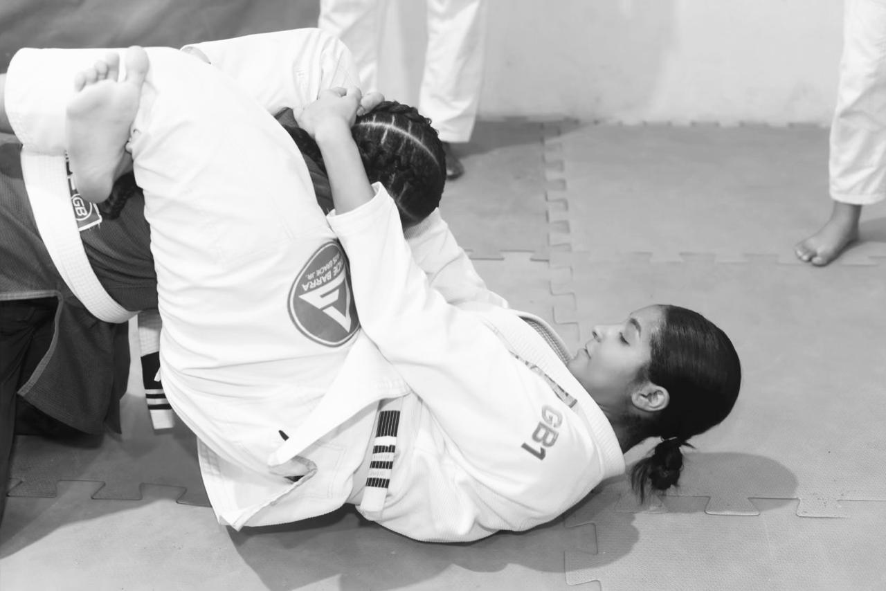
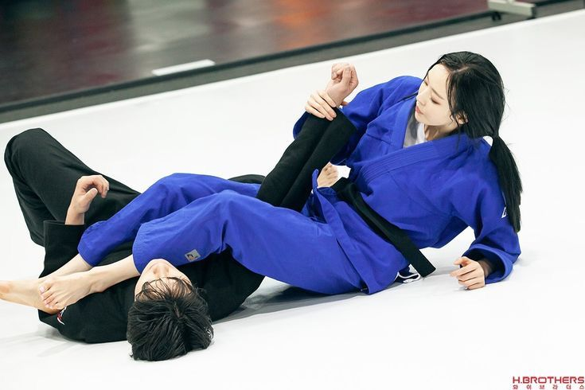
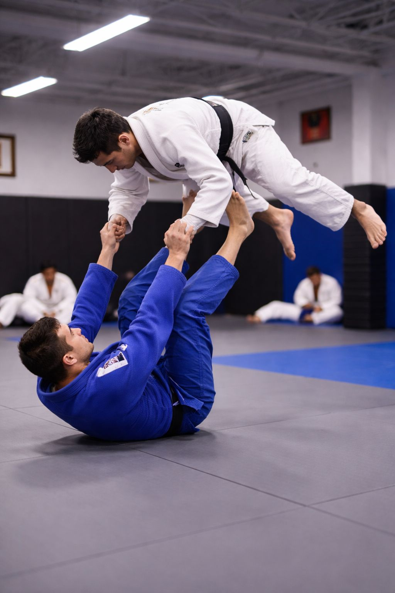
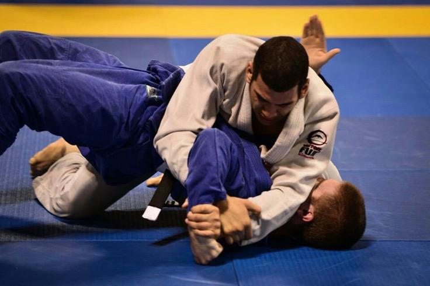
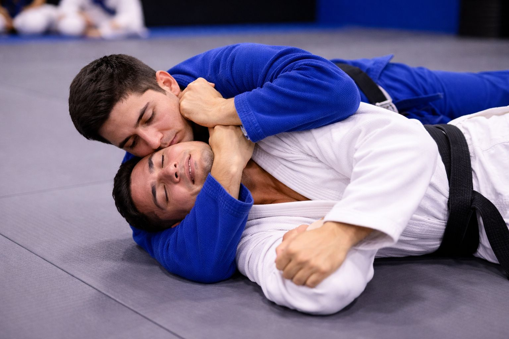

Finalização com as pernas ao redor do pescoço e braço do adversário, cortando a circulação.

Chave de braço que hiperextende o cotovelo do adversário, forçando a desistência.

Técnica de inversão onde o atleta usa os pés no quadril do oponente para virar a posição.

Chave de ombro aplicada girando o braço do adversário para trás, forçando a articulação.

Estrangulamento pelas costas que corta o fluxo de sangue para o cérebro do adversário.